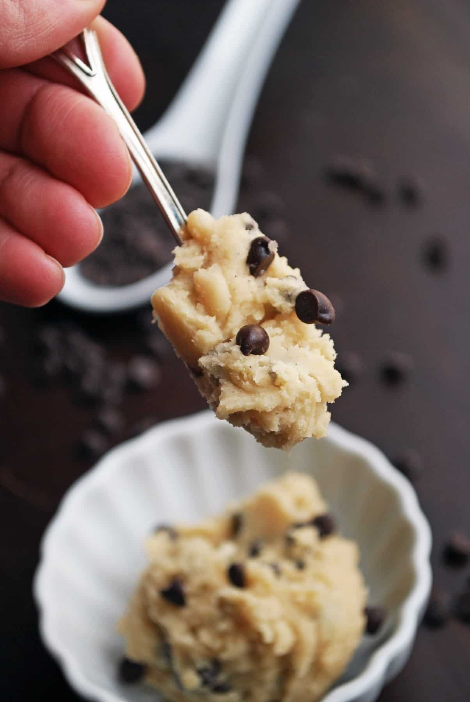

Cookie Dough

Description
Sometimes I want cookies but don't have the patience for the time required
to cook them. This delicious egg-free recipe is here to save the day in
situations such as these. It makes a single serving.
Ingredients
- 1/4 cup flour
- 2 tbsp melted unsalted butter
- 2 tbsp brown sugar
- 1 tbsp white sugar
- Pinch of salt
- 1 tsp milk
- 1/8 tsp vanilla extract
- 2 tbsp mini chocolate chips
Steps
- Melt the butter.
- Whisk the butter and sugars and salt together.
- Stir in milk and vanilla.
- Stir in the flour and chocolate chips.
- Enjoy!
More recipes